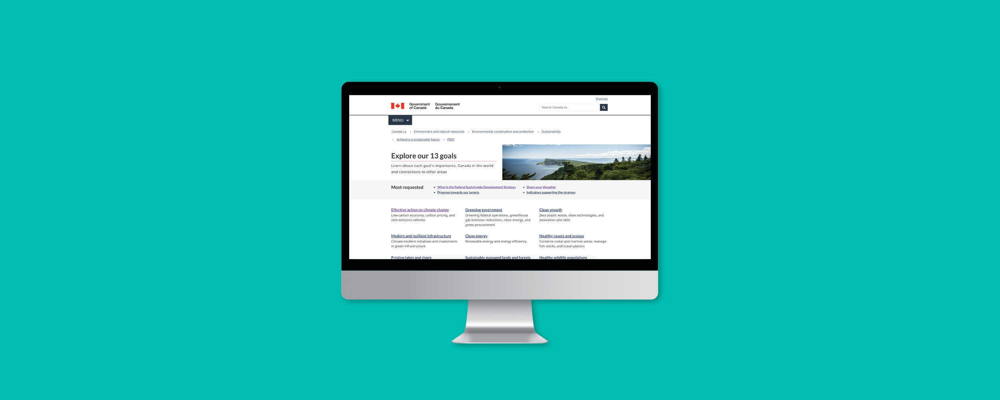
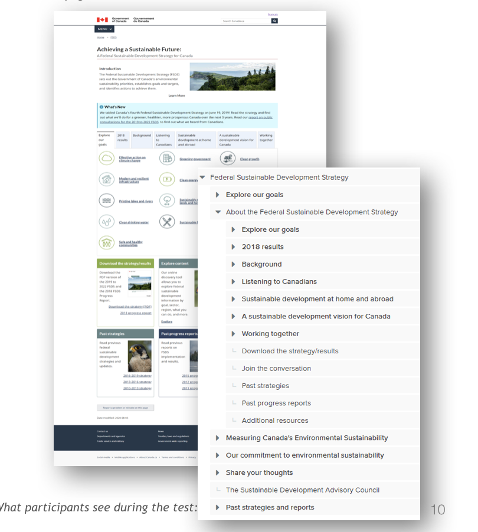
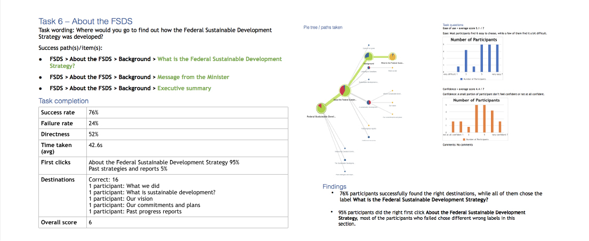
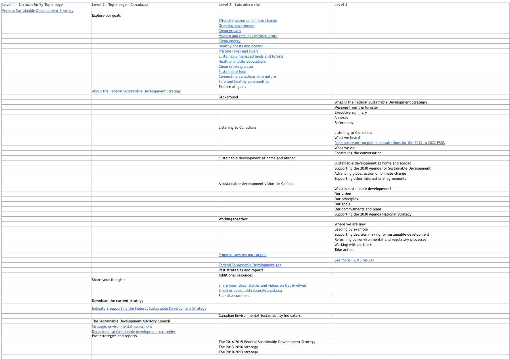
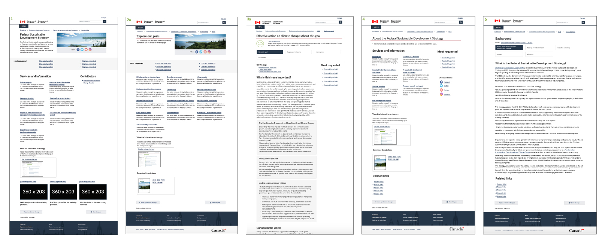
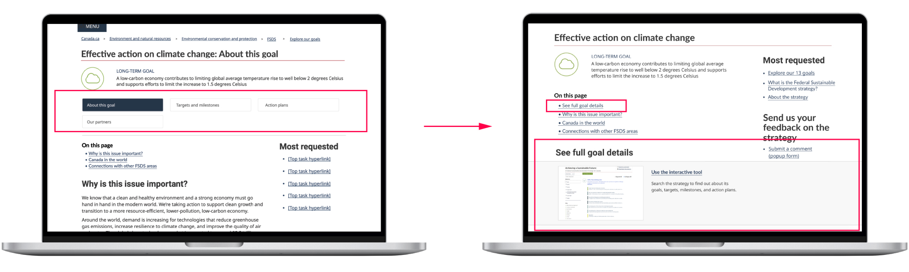
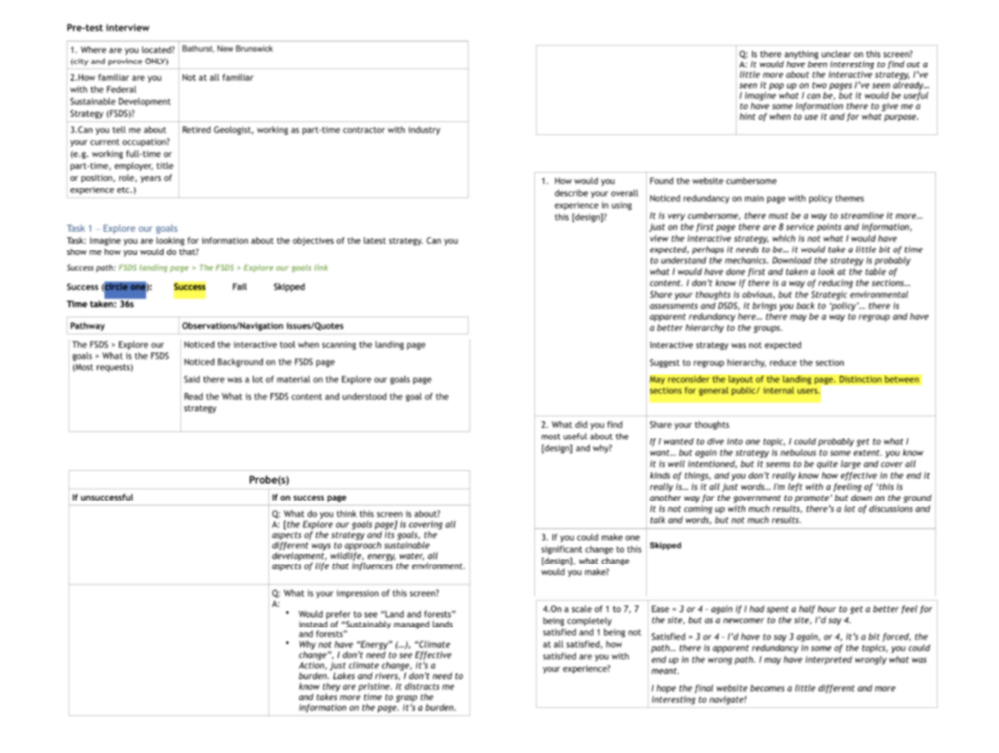
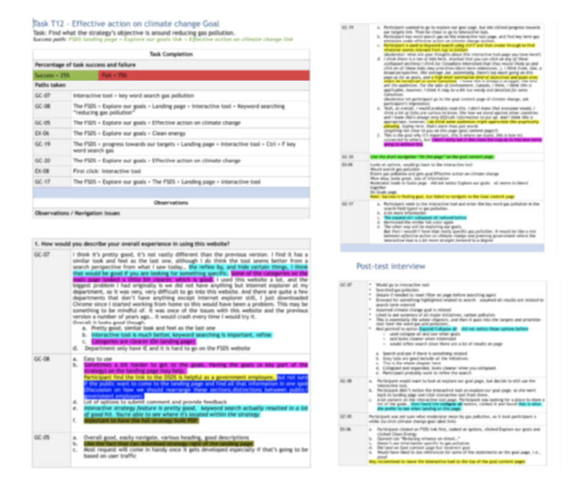
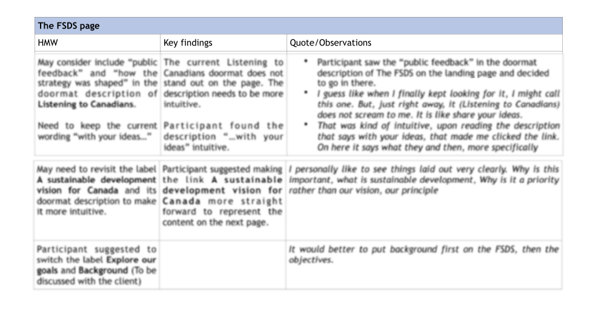
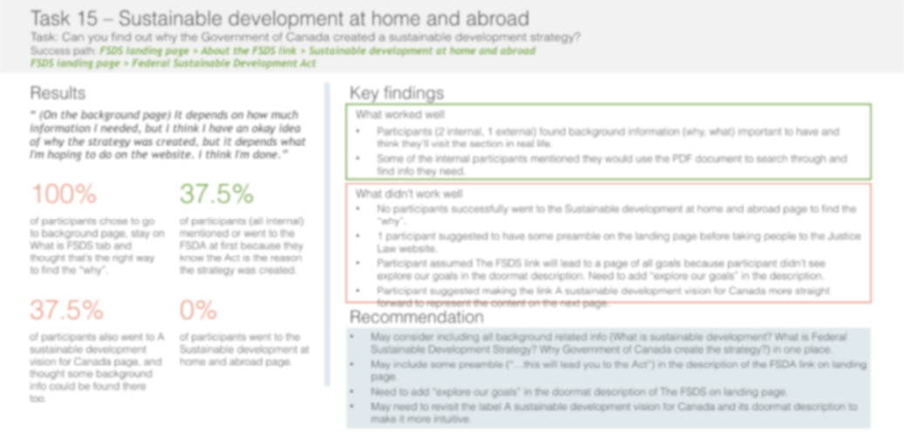

<div id="portfolio-page" class="portfolio-page-content">
    <div class="portfolio-page-wrapper">
        <div class="portfolio-page-nav">
            <div class="nav-item portfolio-page-prev-next">
                <a class="ajax-page-load" href="portfolio-project-2.html"><i class="lnr lnr-chevron-left"></i></a>
                <a class="ajax-page-load" href="portfolio-project-4.html"><i class="lnr lnr-chevron-right"></i></a>
            </div>
            <div class="nav-item portfolio-page-close-button">
                <a id="portfolio-page-close-button" href="#"><i class="lnr lnr-cross"></i></a>
            </div>
        </div>

        <div class="portfolio-page-title">
            <div>
                <h1>The FSDS Website Redesign</h1>
                <h5>Enhancing Accessibility and Visibility of the Federal Sustainable Development Strategy (FSDS) Website for All Users</h5>
            </div>
        </div>
        <div class="hero">
            
        </div>

        <div class="project-overview olcms">
            <div class="project-overview-row">
                <h2>Project Overview</h2>
            </div>
            <div class="project-overview-row">
                <div>
                    <h3>Introduction</h3>
                    <p>The Sustainable Development Policy Division (SDPD) collaborated with Systemscope to revamp the architecture of the e-Strategy, with the primary goal of improving the Federal Sustainable Development Strategy (FSDS) website's visibility on search engines and, consequently, to the general public. Our mission included a comprehensive website redesign and the implementation of essential Search Engine Optimization (SEO) elements for its content.</p>
                </div>
                <div>
                    <h3>Objective</h3>
                    <p>Our mission included a comprehensive website redesign and the implementation of essential Search Engine Optimization (SEO) elements for its content.</p>
                </div>
                <div>
                    <h3>My Role</h3>
                    <p style="margin-bottom: 0;">
                        In this project, I played the dual roles of a researcher and designer, which enabled me to efficiently and directly apply research findings to improve the design. My primary contribution was:
                    </p>
                    <ul>
                        <li>Analyzing User Feedback</li>
                        <li>Design and Mockups</li>
                        <li>Client Collaboration</li>
                        <li>Navigation Testing</li>
                        <li>Deliverables Contribution</li>
                    </ul>
                </div>
            </div>
        </div>

        <div class="design-process">
            <div class="design-process-row">
                <h2>Redesign Process</h2>
            </div>
            <div class="design-process-row">
                <div>
                    <h3>Information Architecture Testing</h3>
                    <h4>Test Process</h4>
                    <p>To establish an effective information architecture for the FSDS website redesign, we conducted tree testing using Optimal Workshop's Treejack tool. Participants were tasked with identifying where they would expect to find specific information or complete certain tasks within the information architecture.
                        <br><br>
                        This process provided valuable insights into user expectations and areas where users encountered difficulties, allowing us to make informed improvements.
                    </p>
                    <div class="fsds-center">
                        
                    </div>
                    <p class="img_title">The original site "dynamic" page and the "tree" for the testing</p>

                    <div class="fsds-center">
                        
                    </div>
                    <p class="img_title">Test result of task 6</p>

                    <h4>Role and Contributions</h4>
                    <p>Upon joining the project, my role was to collect, organize, and analyze the results of the ongoing tree testing. I then compiled insights and recommendations based on these findings. These recommendations formed the foundation for a revised information architecture, which we subsequently tested through navigation testing.</p>
                    <div class="fsds-center">
                        
                    </div>
                    <p class="img_title">Revised information architecture</p>

                    <h4>Key Findings</h4>
                    <div class="key-finding-quote">
                        <h4>"Unless you have the ability to search the term "wastewater system" not sure this is easy to find based on the titles of the Goals."</h4>
                    </div>
                    <div class="key-finding-quote">
                        <h4>“Going off of the name of the goals only can make it hard to find some things (e.g. plastic waste, invasive alien species) since these topics could be relevant to many”</h4>
                    </div>
                    <p>Some key findings from the tree testing phase included user difficulties in locating specific topics like "wastewater system" solely based on goal titles. Additionally, relying solely on goal names for navigation made it challenging to find topics such as "plastic waste" and "invasive alien species," which could be relevant to multiple goals.</p>

                    <h4>Validation and Next Steps</h4>
                    <p>We collaborated closely with the client team to validate our recommendations and the revised information architecture. With their approval, we proceeded to the next phase of the project.</p>
                </div>
                <div>
                    <h3>Mockups and Prototype</h3>
                    <h4>Mockups and Prototype Development</h4>
                    <p>Following the analysis of tree testing data, I gained a deeper understanding of the FSDS site's elements, content, and structure. I initiated the creation of mockups for use in the navigation testing phase, seeking feedback from team members and engaging in discussions to refine the design.</p>
                    <div class="fsds-center">
                        
                    </div>
                    <p class="img_title">Some of the drafting mockups</p>
                    <p>Our team conducted intensive meetings to address user interface elements, such as template selection, section inclusion, icon choices, and doormat descriptions. We also focused on optimizing user flow throughout the site, guiding users to interactive tools and other relevant content.</p>
                    <h4>Client Feedback and Adjustments</h4>
                    <p>We presented the mockups to the client team for review. The client expressed a preference for the interactive tool as the primary means for users to access strategy details. In response, we retained essential sections, removed redundant content, and adjusted navigation buttons to align with the client's vision while ensuring compliance with our project scope.</p>
                    <div class="fsds-center">
                        
                    </div>
                    <p class="img_title">Changes to goal content page</p>
                </div>
                <div>
                    <h3>Navigation Testing</h3>
                    <h4>Test process</h4>
                    <p>The navigation usability testing aimed to identify navigation issues before initiating the actual site redesign. After incorporating client feedback, we finalized the mockups and created a prototype for testing. I also played a role in participant recruitment, test protocol preparation, and note-taking during the testing phase.
                        <br><br>We conducted a test dry-run and conducted online navigation tests with 8 participants, including internal and external users. Brief post-test discussions were held to capture participants' key points, and we relied on recorded sessions to complete note-taking sheets and analyze the test results.</p>
                    <div class="fsds-center">
                        
                    </div>
                    <p class="img_title">Navigation test note of one participant (image intentionally obscured to protect privacy)</p>

                    <h4>Key Findings and Mockup Updates</h4>
                    <p>Upon completing all notes, I meticulously analyzed the data for each task and color-coded findings to extract key insights.</p>
                    <div class="fsds-center">
                        
                    </div>
                    <p class="img_title">Analyzing result of navigation test (image intentionally obscured to protect privacy)</p>
                    <p>To guide mockup adjustments, I formulated "How Might We" (HMW) questions for each finding. These observations were presented to our team, facilitating discussions on prioritizing test findings and refining mockups.</p>
                    <div class="fsds-center">
                        
                    </div>
                    <p class="img_title">Key findings and HMW for the FSDS page (image intentionally obscured to protect privacy)</p>
                </div>


            </div>
            <!--            <div class="design-process-full-width">-->
            <!--                <div class="high-fi-wireframe">-->
            <!--                    -->
            <!--                </div>-->
            <!--            </div>-->
        </div>

        <div class="deliverable fsds">
            <div class="deliverable-row">
                <h2>Deliverables</h2>
                <p>We delivered a comprehensive navigation testing summary report and updated mockups for review. I played a role in creating key findings pages for each task in the final report and helped refine the mockups based on feedback from the client team.
                    <br><br><a href="https://www.figma.com/proto/Bamnefjd20jjz7rYj5nOrg/FSDS?node-id=1235-71&viewport=-6580%2C740%2C0.2581557631492615&scaling=min-zoom&starting-point-node-id=1235%3A71">Click here</a> to view the final prototype we delivered.
                </p>
                <div class="fsds-center">
                    
                </div>
                <p class="img_title">Key findings in the final report (image intentionally obscured to protect privacy)</p>
            </div>
        </div>
        <div class="conclusion_olcms">
            <div class="conclusion_olcms-row">
                <h2>Conclusion</h2>
                <p>Our efforts culminated in the delivery of a final prototype that incorporated the insights gathered during testing. Each page of the prototype integrated these findings into the design, ensuring a user-friendly and accessible Federal Sustainable Development Strategy (FSDS) website.</p>
            </div>
        </div>


        <!--            <div class="col-sm-4 col-md-4 portfolio-block">-->
        <!--                &lt;!&ndash; Project Description &ndash;&gt;-->
        <!--                <div class="project-description">-->
        <!--                    <div class="block-title">-->
        <!--                        <h3>Description</h3>-->
        <!--                    </div>-->
        <!--                    <ul class="project-general-info">-->
        <!--                        <li><p><i class="lnr lnr-user"></i> Alex Smith</p></li>-->
        <!--                        <li><p><i class="lnr lnr-link"></i> <a href="#" target="_blank">www.project-site.com</a></p></li>-->
        <!--                        <li><p><i class="lnr lnr-calendar-full"></i> 25 april, 2021</p></li>-->
        <!--                    </ul>-->

        <!--                    <p class="text-justify">Aliquam euismod aliquam massa, quis eleifend dui sodales vitae. Interdum et malesuada fames ac ante ipsum primis in faucibus.</p>-->
        <!--                    &lt;!&ndash; /Project Description &ndash;&gt;-->

        <!--                    &lt;!&ndash; Technology &ndash;&gt;-->
        <!--                    <div class="tags-block">-->
        <!--                        <div class="block-title">-->
        <!--                            <h3>Technology</h3>-->
        <!--                        </div>-->
        <!--                        <ul class="tags">-->
        <!--                            <li><a>HTML5</a></li>-->
        <!--                            <li><a>CSS3</a></li>-->
        <!--                            <li><a>jQuery</a></li>-->
        <!--                            <li><a>Ajax</a></li>-->
        <!--                            <li><a>PHP5</a></li>-->
        <!--                        </ul>-->
        <!--                    </div>-->
        <!--                    &lt;!&ndash; /Technology &ndash;&gt;-->

        <!--                    &lt;!&ndash; Share Buttons &ndash;&gt;-->
        <!--                    <div class="share-buttons">-->
        <!--                        <div class="block-title">-->
        <!--                            <h3>Share</h3>-->
        <!--                        </div>-->
        <!--                        <div class="share-buttons-block">-->
        <!--                            <a href="#" target="_blank" class="btn"><i class="fab fa-facebook-f"></i> </a>-->
        <!--                            <a href="#" target="_blank" class="btn"><i class="fab fa-twitter"></i> </a>-->
        <!--                            <a href="#" target="_blank" class="btn"><i class="fab fa-dribbble"></i> </a>-->
        <!--                        </div>-->
        <!--                    </div>-->
        <!--                    &lt;!&ndash; /Share Buttons &ndash;&gt;-->
        <!--                </div>-->
        <!--                &lt;!&ndash; Project Description &ndash;&gt;-->
        <!--            </div>-->

        <div class="project-page-footer">
            <p>© 2023 Yumao Chen</p>
        </div>
    </div>
</div>